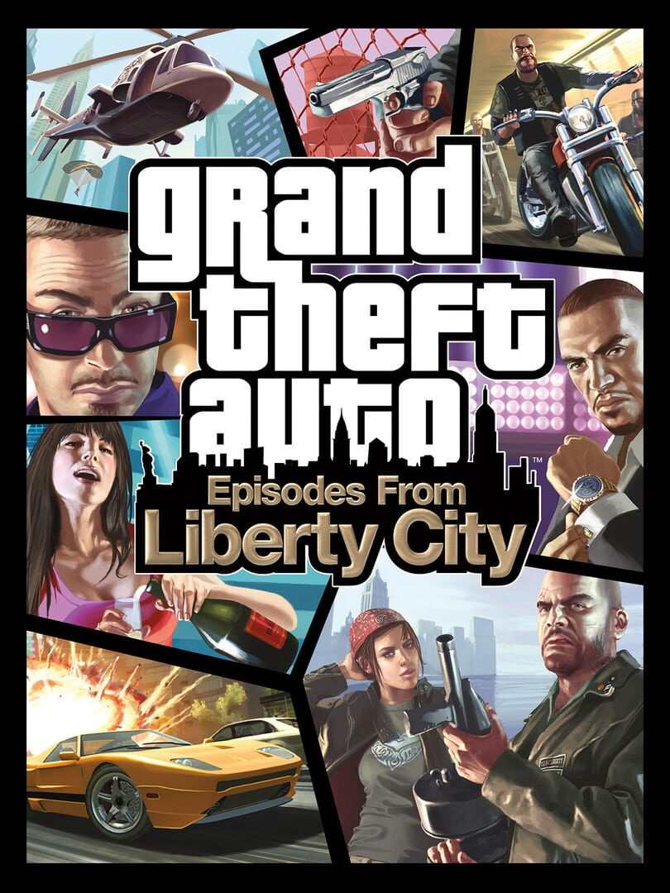

Grand Theft Auto: Episodes from Liberty City
Grand Theft Auto: Episodes from Liberty City
Details
|  | |
| Playtime | Not Played |
| Last Activity | Never |
| Added | 07/08/2021 17:39:37 |
| Modified | Never |
| Completion Status | Not Played |
| Source | Steam |
| Platform | PC |
| Release Date | 12/04/2010 |
| Community Score | 72 |
| Critic Score | 84 |
| User Score | |
| Genre | Action |
| Developer | Rockstar North / Toronto |
| Publisher | Rockstar Games |
| Feature | Multiplayer Single Player |
| Links | PCGamingWiki Community Hub Discussions Guides Store Page News |
Description
Important Updates To Grand Theft Auto IV and Episodes from Liberty City
We are making a number of changes to make sure players who own Grand Theft Auto IV and GTA: Episodes from Liberty City can continue to enjoy these games.
New Players
Starting 03/19/2020, Grand Theft Auto IV: Complete Edition will replace both Grand Theft Auto IV and Grand Theft Auto: Episodes from Liberty City wherever it is currently digitally available. Grand Theft Auto IV: Complete Edition will as also be available via the Rockstar Games Launcher.Current game save files will be compatible with Grand Theft Auto IV: Complete Edition.
As a result of this update the following services will no longer be available in Grand Theft Auto IV: Complete Edition:
- Games for Windows Live
- Multiplayer mode
- Leaderboards
The following Radio Stations will be temporarily unavailable in Grand Theft Auto IV: Complete Edition
- RamJam FM, Self-Actualization FM, and Vice City FM (previously available in Grand Theft Auto: Episodes from Liberty City)
Note: Because Japanese is a supported language for Grand Theft Auto IV, but is not supported for Grand Theft Auto: Episodes from Liberty City, players will continue to be able to play Grand Theft Auto IV with Japanese sub-titles but will need to select another language in order to play Grand Theft Auto: Episodes from Liberty City.
Current Players
Players who have previously installed and played Grand Theft Auto IV or Grand Theft Auto: Episodes from Liberty City will be able to update their copy to Grand Theft Auto IV: Complete Edition through the following means:Steam Users
Depending on the game, players on Steam will need to install or update their current game:- Grand Theft Auto: Episodes from Liberty City will be removed and replaced with GTAIV: Complete Edition in the launcher library. Update file size is expected to be approximately 22GB
- Grand Theft Auto IV owners will download content from Grand Theft Auto: Episodes from Liberty City and their game will update to GTAIV: Complete Edition. Update file size is expected to be approximately 6GB
Physical Media
- Games not previously activated using Games for Windows Live will be able to use the Key on the back of the game manual to activate and update to Grand Theft Auto IV: Complete Edition
Games for Windows Live Digital Store Purchases
- Games previously activated using Games for Windows Live will require players to create and/or link their Social Club accounts in replacement of Games for Windows Live to update to Grand Theft Auto IV: Complete Edition
Note: New activations from players trying to install current copies of Grand Theft Auto IV may be disrupted until Grand Theft Auto IV: Complete Edition is available. All users will need to be connected to the internet and authenticate their copy of the game.
About the Game
PLEASE NOTE: Microsoft no longer supports creating Games for Windows-LIVE accounts within Episodes From Liberty City. You can create an account through account.xbox.com and then log into your account in game.Grand Theft Auto: Episodes from Liberty City includes both The Lost and Damned, and The Ballad of Gay Tony together and does not require a copy of the original Grand Theft Auto IV to play.
In The Lost and Damned, experience Liberty City as Johnny, a veteran member of The Lost, a notorious biker gang. Johnny has been creating business opportunities for The Lost in Liberty City but his first loyalty must be to the patch he wears on his back and to Billy Grey, the club's President. However, when Billy returns from rehab hell-bent on bloodshed and debauchery, Johnny finds himself in the middle of a vicious turf war with rival gangs for control of a city torn apart by violence and corruption. Can the brotherhood survive?
The Ballad of Gay Tony injects Liberty City with an overdose of guns, glitz, and grime. As Luis Lopez, part-time hoodlum and full-time assistant to legendary nightclub impresario Tony Prince (aka "Gay Tony"), players will struggle with the competing loyalties of family and friends, and with the uncertainty about who is real and who is fake in a world in which everyone has a price.